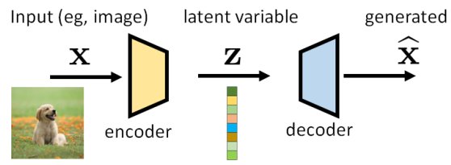
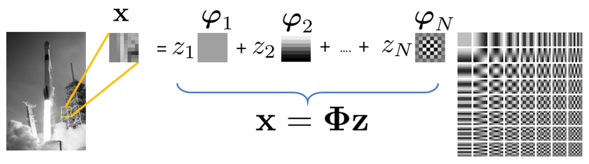

摘要
近年来，生成工具的惊人增长为文本到图像生成和文本到视频生成提供了许多令人兴奋的应用。这些生成工具背后的基本原理是扩散的概念，这是一种特殊的采样机制，克服了以前方法中一些长期存在的缺点。本教程的目标是讨论这些扩散模型的基本思想。本教程的目标受众包括有兴趣研究扩散模型或应用这些工具解决其他问题的本科生和研究生。论文地址
变分自编码器（VAE）
很久以前，在一个遥远的星系里，我们想建造一个生成器——一个从我们给计算机的一些输入中生成文本、演讲或图像的生成器。虽然这听起来很神奇，但这个问题实际上已经研究了很长时间。为了开始本教程的讨论，我们将首先考虑变分自动编码器（VAE）。VAE是由金玛和韦林于2014年提出的[23 ]。根据他们2019年的教程[24 ]，VAE的灵感来自亥姆霍兹机器[10] ，是图形模型和深度学习的结合。在接下来的内容中，我们将讨论VAE的问题设置、构建块以及与训练相关的优化工具。
VAE的构建模块
我们首先讨论VAE的示意图。如下图所示，VAE由一对模型组成（通常由深度神经网络实现）。位于输入端附近的称为编码器，而位于输出端附近的则称为解码器。我们将输入（通常是图像）表示为向量x，将输出（通常是另一个图像）表示为向量x ^ \hat{x} x ^

潜在变量z在此设置中有两个特殊作用。对于输入，潜在变量封装了可用于描述x的信息。编码过程可能是一个有损的过程，但我们的目标是尽可能多地保留x的重要内容。关于输出，潜在变量充当可以生成图像x ^ \hat{x} x ^
下面给出了潜在变量的更正式的定义:定义1.1 潜在变量[24 ]。在概率模型中，潜在变量z是我们没有观察到的变量，因此不是训练数据集的一部分，尽管它们是模型的一部分。
示例1.1 获得图像的潜在表示并不是一件陌生的事情。回到JPEG压缩时代（可以说是恐龙时代），我们使用离散余弦变换（DCT）基函数ϕ n \phi_n ϕ n z = [ z 1 , . . . , z N ] T z = [z_1, ..., z_N]^T z = [ z 1 , ... , z N ] T z n = ⟨ ϕ n , x ⟩ z_n = \lang\phi_n,x\rang z n = ⟨ ϕ n , x ⟩

在这个例子中，系数向量z是潜在变量。编码器是DCT变换，解码器是逆DCT变换。
VAE中的“变分”一词与研究函数优化的变分法有关。在VAE中，我们有兴趣寻找描述x和z的最佳概率分布。有鉴于此，我们需要考虑一些分布：
p(x)：x的真实分布。扩散模型的整个宇宙都是为了找到从p(x)中提取样本的方法。如果我们知道p(x)（比如，我们有一个描述p(x)的公式），我们就可以画一个最大化log p(x)的样本x。
p(z)：潜在变量的分布。通常，我们将其设为零均值单位方差高斯N ( 0 , I ) \mathcal{N}(0,I) N ( 0 , I ) 12 ]也有一个很好的解释。有人提到，通过将高斯函数映射到足够复杂的函数中，可以生成任何分布 。例如，在单变量设置中，逆累积分布函数（CDF）技术[7 ]可用于具有可逆CDF的任何连续分布。一般来说，只要我们有一个足够强大的函数（例如神经网络），我们就可以学习它，并将独立同分布高斯映射到我们问题所需的任何潜在变量。
p(z|x)：与编码器相关的条件分布，当给定x时，它告诉我们z的可能性。我们无法访问它。p(z|x)本身不是编码器，但编码器必须做一些事情，使其与p(z|x)保持一致。
p(x|z)：与解码器相关的条件分布，它告诉我们在给定z的情况下得到x的后验概率。同样，我们无法访问它。
当我们从经典参数模型切换到深度神经网络时，潜在变量的概念就变成了深层潜在变量。金玛和韦林[24 ]给出了一个很好的定义。定义1.2 深层潜在变量[24 ]。深层潜在变量是潜在变量，其分布p(z)、p(x|z)或p(z|x)由神经网络参数化。
深层潜变量的优点是，即使先验分布和条件分布的结构相对简单（例如高斯分布），它们也可以对非常复杂的数据分布p(x)进行建模。一种思考方式是，神经网络可用于估计高斯分布的均值。虽然高斯本身很简单，但平均值是输入数据的函数，输入数据通过神经网络生成数据相关的平均值。因此，高斯函数的表现力得到了显著提高。
让我们回到上面的四个分布。下面是一个有点琐碎但有教育意义的例子，可以说明这个想法：示例1.2 考虑根据高斯混合模型分布的随机变量X，其中潜在变量z∈{1，…，K}表示簇恒等式，使得p Z ( k ) = P [ Z = k ] = π k p_Z(k) = \mathcal{P}[Z = k] = \pi_k p Z ( k ) = P [ Z = k ] = π k ∑ k = 1 K π k = 1 \sum_{k=1}^{K}\pi_k = 1 ∑ k = 1 K π k = 1
P X ∣ Z ( x ∣ k ) = N ( x ∣ μ k , σ k 2 I ) . P_{X|Z}(x|k) = \mathcal{N}(x|\mu_k,\sigma_k^2\mathrm{I})\,.
P X ∣ Z ( x ∣ k ) = N ( x ∣ μ k , σ k 2 I ) .
x的边际分布可以用全概率定律来求，得到：
p X ( x ) = ∑ k = 1 K p X ∣ Z ( x ∣ k ) p Z ( k ) = ∑ k = 1 K π k N ( x ∣ μ k , σ k 2 I ) . (1) p_{X}(x) = \sum_{k=1}^K p_{X|Z}(x|k)p_Z(k) = \sum_{k=1}^{K}\pi_k\mathcal{N}(x|\mu_k,\sigma_k^2\mathrm{I})\,. \tag{1}
p X ( x ) = k = 1 ∑ K p X ∣ Z ( x ∣ k ) p Z ( k ) = k = 1 ∑ K π k N ( x ∣ μ k , σ k 2 I ) . ( 1 )
因此，如果我们从p X ( x ) p_{X}(x) p X ( x ) x ∼ p X ( x ) x\sim p_{X}(x) x ∼ p X ( x ) z ∼ { 1 , . . . , K } z\sim\lbrace1,...,K\rbrace z ∼ { 1 , ... , K } z ∼ p Z ( k ) z\sim p_{Z}(k) z ∼ p Z ( k )
为了说明编码器和解码器是如何工作的，让我们假设均值和方差是已知的并且是固定的。否则，我们将需要通过期望最大化（EM）算法来估计均值和方差。这是可行的，但繁琐的方程式会破坏这个插图的教育目的。编码器 ：我们如何从x得到z？这很容易，因为在编码器处，我们知道pp X ( x ) p_X(x) p X ( x )
p Z ∣ X ( 1 ∣ x ) > c l a s s 1 < c l a s s 2 p Z ∣ X ( 2 ∣ x ) , p_{Z|X}(1|x)
\begin{split}
&\gt\mathrm{class}\;1\\
&\lt\mathrm{class}\;2
\end{split}\;
p_{Z|X}(2|x)\,,
p Z ∣ X ( 1∣ x ) > class 1 < class 2 p Z ∣ X ( 2∣ x ) ,
这将返回一个简单的决定：你给我们x，我们告诉你z∈{1,2}。解码器 ：在解码器端，如果我们得到一个潜在码z∈{1，…，K}，那么神奇的解码器只需要向我们返回一个样本x，该样本x来自p X ∣ Z ( x ∣ k ) = N ( x ∣ μ k , σ k 2 I ) p_{X|Z}(x|k) = \mathcal{N}(x|\mu_k,\sigma_k^2\mathrm{I}) p X ∣ Z ( x ∣ k ) = N ( x ∣ μ k , σ k 2 I )
这个例子当然过于简单了，因为现实世界的问题可能比具有已知均值和已知方差的高斯混合模型要困难得多。但我们意识到，如果我们想找到神奇的编码器和解码器，我们必须找到两个条件分布p(z|x)和p(x|z)。然而，它们都是高维的。
为了让我们说一些更有意义的话，我们需要强加额外的结构，以便我们可以将这一概念推广到更难的问题。为此，我们考虑以下两种代理分布：
q ϕ ( z ∣ x ) q_{\phi}(z|x) q ϕ ( z ∣ x ) q ϕ ( z ∣ x ) q_{\phi}(z|x) q ϕ ( z ∣ x ) 24，第2.1节 ]。例如，我们可以定义:
( μ , σ 2 ) = E n c o d e r N e t w o r k ϕ ( x ) , q ϕ ( z ∣ x ) = N ( z ∣ μ , d i a g ( σ 2 ) ) . (2) \begin{aligned}
(\mu,\sigma^2) = \mathrm{EncoderNetwork}_{\phi}(x)\,, \\
q_{\phi}(z|x) = \mathcal{N}(z|\mu,\mathrm{diag}(\sigma^2))\,. \tag{2}
\end{aligned}
( μ , σ 2 ) = EncoderNetwork ϕ ( x ) , q ϕ ( z ∣ x ) = N ( z ∣ μ , diag ( σ 2 )) . ( 2 )
该模型因其可处理性和计算效率而被广泛使用。
p θ ( x ∣ z ) p_{\theta}(x|z) p θ ( x ∣ z )
f θ ( z ) = D e c o d e r N e t w o r k θ ( z ) , p θ ( x ∣ z ) = N ( x ∣ f θ ( z ) , σ d e c 2 I ) , (3) \begin{aligned}
f_{\theta}(z) = \mathrm{DecoderNetwork}_{\theta}(z)\,, \\
p_{\theta}(x|z) = \mathcal{N}(x|f_{\theta}(z),\sigma_{dec}^2\mathrm{I})\,, \tag{3}
\end{aligned}
f θ ( z ) = DecoderNetwork θ ( z ) , p θ ( x ∣ z ) = N ( x ∣ f θ ( z ) , σ d ec 2 I ) , ( 3 )
其中σ d e c \sigma_{dec} σ d ec
下图总结了输入x和潜在z之间的关系以及条件分布。有两个节点x和z。“正向”关系由p(z|x)指定（近似为q ϕ ( z ∣ x ) q_{\phi}(z|x) q ϕ ( z ∣ x )
示例1.3 假设我们有一个随机变量 x ∈ R d x\in\mathcal{R}^d x ∈ R d z ∈ R d z\in\mathcal{R}^d z ∈ R d
x ∼ p ( x ) = N ( x ∣ μ , σ 2 I ) , z ∼ p ( z ) = N ( z ∣ 0 , I ) . \begin{aligned}
&x\sim p(x) = \mathcal{N}(x|\mu,\sigma^2\mathrm{I}),\\
&z\sim p(z) = \mathcal{N}(z|0,\mathrm{I}).
\end{aligned}
x ∼ p ( x ) = N ( x ∣ μ , σ 2 I ) , z ∼ p ( z ) = N ( z ∣0 , I ) .
我们希望构建一个VAE。通过这种方式，我们的意思是我们想构建两个映射Encoder(·)和Decoder(·)。编码器将获取样本x并将其映射到潜在变量z，而解码器将获取潜在变量z并将其对应到生成的变量x ^ \hat{x} x ^ z = ( x − μ ) / σ z = (x - \mu)/\sigma z = ( x − μ ) / σ x ^ = μ + σ z \hat{x} = \mu + \sigma\mathrm{z} x ^ = μ + σ z
p ( x ∣ z ) = δ ( x − ( σ z + μ ) ) , p ( z ∣ x ) = δ ( z − ( x − μ ) / σ ) . \begin{aligned}
&p(x|z) = \delta(x - (\sigma z + \mu))\,,\\
&p(z|x) = \delta(z - (x - \mu)/\sigma)\,.
\end{aligned}
p ( x ∣ z ) = δ ( x − ( σ z + μ )) , p ( z ∣ x ) = δ ( z − ( x − μ ) / σ ) .
现在假设我们不知道p(x)，所以我们需要构建一个编码器和解码器来估计z和x ^ \hat{x} x ^ μ ^ ( x ) \hat{\mu}(x) μ ^ ( x ) σ ^ ( x ) 2 \hat{\sigma}(x)^2 σ ^ ( x ) 2 q ϕ ( z ∣ x ) q_{\phi}(z|x) q ϕ ( z ∣ x )
( μ ^ ( x ) , σ ^ ( x ) 2 ) = E n c o d e r ϕ ( x ) , q ϕ ( z ∣ x ) = N ( z ∣ μ ^ ( x ) , σ ^ ( x ) 2 I ) . \begin{aligned}
(\hat{\mu}(x),\hat{\sigma}(x)^2) = \mathrm{Encoder}_{\phi}(x),\\
\quad\quad q_{\phi}(z|x) = \mathcal{N}(z|\hat{\mu}(x),\hat{\sigma}(x)^2\mathrm{I})\,.
\end{aligned}
( μ ^ ( x ) , σ ^ ( x ) 2 ) = Encoder ϕ ( x ) , q ϕ ( z ∣ x ) = N ( z ∣ μ ^ ( x ) , σ ^ ( x ) 2 I ) .
为了讨论的目的，我们假设μ ^ \hat{\mu} μ ^ μ ^ ( x ) = a x + b \hat{\mu}(x) = ax + b μ ^ ( x ) = a x + b σ ^ ( x ) 2 \hat{\sigma}(x)^2 σ ^ ( x ) 2
q ϕ ( z ∣ x ) = m a t h c a l N ( z ∣ a x + b , t 2 I ) . q_{\phi}(z|x) = mathcal{N}(z|ax+b,t^2\mathrm{I})\,.
q ϕ ( z ∣ x ) = ma t h c a l N ( z ∣ a x + b , t 2 I ) .
对于解码器，我们通过考虑以下因素来部署类似的结构:
( μ ~ ( z ) , σ ~ ( z ) 2 ) = D e c o d e r θ ( z ) , p θ ( x ∣ z ) = N ( x ∣ μ ~ ( z ) , σ ~ ( z ) 2 I ) . \begin{aligned}
(\tilde{\mu}(z), \tilde{\sigma}(z)^2) = \mathrm{Decoder}_{\theta}(z)\,,\\
p_{\theta}(x|z) = \mathcal{N}(x|\tilde{\mu}(z),\tilde{\sigma}(z)^2\mathrm{I})\,.
\end{aligned}
( μ ~ ( z ) , σ ~ ( z ) 2 ) = Decoder θ ( z ) , p θ ( x ∣ z ) = N ( x ∣ μ ~ ( z ) , σ ~ ( z ) 2 I ) .
同样，为了讨论的目的，我们假设μ ~ \tilde{\mu} μ ~ μ ~ ( z ) = c z + v \tilde{\mu}(z) = cz + v μ ~ ( z ) = cz + v σ ~ ( z ) 2 = s 2 \tilde{\sigma}(z)^2 = s^2 σ ~ ( z ) 2 = s 2 p θ ( x ∣ z ) p_{\theta}(x|z) p θ ( x ∣ z )
p θ ( x ∣ z ) = N ( z ∣ c x + v , σ 2 I ) . p_{\theta}(x|z) = \mathcal{N}(z|cx + v,\sigma^2\mathrm{I})\,.
p θ ( x ∣ z ) = N ( z ∣ c x + v , σ 2 I ) .
我们稍后将讨论如何确定参数。
证据下限(Evidence Lower Bound)
我们如何使用这两个代理分布来实现确定编码器和解码器的目标？如果我们将 ϕ \phi ϕ θ \theta θ ϕ \phi ϕ θ \theta θ 24 ]：定义1.3 （证据下限）证据下限定义为:
E L B O ( x ) = def E q ϕ ( z ∣ x ) [ l o g p ( x , z ) q ϕ ( z ∣ x ) ] . (4) \mathrm{ELBO}(x)
\overset{\text{def}}{=}
E_{q_{\phi}(z|x)}\left[\mathrm{log}\frac{p(x,z)}{q_{\phi}(z|x)}\right]\,. \tag{4}
ELBO ( x ) = def E q ϕ ( z ∣ x ) [ log q ϕ ( z ∣ x ) p ( x , z ) ] . ( 4 )
你肯定很困惑，地球上的人怎么能想出这个损失函数！？让我们看看ELBO是什么意思以及它是如何推导出来的。log p ( x ) \text{log}p(x) log p ( x )
log p ( x ) = 一些神奇的推导步骤 = E q ϕ ( z ∣ x ) [ log p ( x , z ) q ϕ ( z ∣ x ) ] + D K L ( q ϕ ( z ∣ x ) ∣ ∣ p ( z ∣ x ) ) ≥ E q ϕ ( z ∣ x ) [ log p ( x , z ) q ϕ ( z ∣ x ) ] = d e f ELBO ( x ) , (5) \begin{aligned}
\text{log}p(x) &= \text{一些神奇的推导步骤}\\
&= E_{q_{\phi}(z|x)}\left[\text{log}\frac{p(x,z)}{q_{\phi}(z|x)}\right] + D_{KL}(q_{\phi}(z|x)||p(z|x))\\
&\ge\mathrm{E}_{q_{\phi}(z|x)}\left[\text{log}\frac{p(x,z)}{q_{\phi}(z|x)}\right]\\
&\overset{def}{=}\text{ELBO}(x)\,, \tag{5}
\end{aligned}
log p ( x ) = 一些神奇的推导步骤 = E q ϕ ( z ∣ x ) [ log q ϕ ( z ∣ x ) p ( x , z ) ] + D K L ( q ϕ ( z ∣ x ) ∣∣ p ( z ∣ x )) ≥ E q ϕ ( z ∣ x ) [ log q ϕ ( z ∣ x ) p ( x , z ) ] = d e f ELBO ( x ) , ( 5 )
其中不等式来自KL散度总是非负 的事实。因此，ELBO是 log p ( x ) \text{log}p(x) log p ( x ) log p ( x ) \text{log}p(x) log p ( x ) log p ( x ) \text{log}p(x) log p ( x ) q ϕ ( z ∣ x ) q_{\phi}(z|x) q ϕ ( z ∣ x ) q ϕ ( z ∣ x ) q_{\phi}(z|x) q ϕ ( z ∣ x )
定理1.1 对数似然分解。对数似然 log p ( x ) \text{log}p(x) log p ( x )
log p ( x ) = E q ϕ ( z ∣ x ) [ log p ( x , z ) q ϕ ( z ∣ x ) ] ⏟ = d e f ELBO ( x ) + D K L ( q ϕ ( z ∣ x ) ∣ ∣ p ( z ∣ x ) ) . (6) \text{log}p(x) = \underbrace
{E_{q_{\phi}(z|x)}\left[\text{log}\frac{p(x,z)}{q_{\phi}(z|x)}\right]}_{\overset{def}{=}\text{ELBO}(x)}
+ D_{KL}(q_{\phi}(z|x)||p(z|x))\,. \tag{6}
log p ( x ) = = d e f ELBO ( x ) E q ϕ ( z ∣ x ) [ log q ϕ ( z ∣ x ) p ( x , z ) ] + D K L ( q ϕ ( z ∣ x ) ∣∣ p ( z ∣ x )) . ( 6 )
证明 诀窍是使用我们神奇的代理 q ϕ ( z ∣ x ) q_{\phi}(z|x) q ϕ ( z ∣ x )
log p ( x ) = log p ( x ) × ∫ q ϕ ( z ∣ x ) d z ⏟ = 1 乘1 = ∫ log p ( x ) ⏟ s o m e c o n s t a n t w r t z × q ϕ ( z ∣ x ) ⏟ d i s t r i b u t i o n i n z d z move log p(x) into integral = E q ϕ ( z ∣ x ) [ ( l o g ) p ( x ) ] , (7) \begin{aligned}
\text{log}p(x) &= \text{log}p(x) × \underbrace{\int q_{\phi}(z|x)dz}_{=1} \quad\quad \text{乘1}\\
&=\int\underbrace{\text{log}p(x)}_{some\;constant \;wrt \;z} × \underbrace{q_{\phi}(z|x)}_{distribution \;in \;z} dz \quad\quad \text{move log p(x) into integral}\\
&= E_{q_{\phi}(z|x)}[\text(log)p(x)]\,, \tag{7}
\end{aligned}
log p ( x ) = log p ( x ) × = 1 ∫ q ϕ ( z ∣ x ) d z 乘 1 = ∫ so m e co n s t an t w r t z log p ( x ) × d i s t r ib u t i o n in z q ϕ ( z ∣ x ) d z move log p(x) into integral = E q ϕ ( z ∣ x ) [ ( l o g ) p ( x )] , ( 7 )
其中最后一个等式是事实，对于任何随机变量z和标量a，∫ a × p Z ( z ) d z = E [ a ] = a \int a × p_Z(z)dz = E[a] = a ∫ a × p Z ( z ) d z = E [ a ] = a E q ϕ ( z ∣ x ) [ ⋅ ] E_{q_{\phi}(z|x)}[\cdot] E q ϕ ( z ∣ x ) [ ⋅ ] p ( x , z ) = p ( z ∣ x ) p ( x ) p(x,z) = p(z|x)p(x) p ( x , z ) = p ( z ∣ x ) p ( x )
E q ϕ ( z ∣ x ) [ log p ( x ) ] = E q ϕ ( z ∣ x ) [ log p ( x , z ) p ( z ∣ x ) ] 贝叶斯定理 = E q ϕ ( z ∣ x ) [ log p ( x , z ) p ( z ∣ x ) × q ϕ ( z ∣ x ) q ϕ ( z ∣ x ) ] 乘以并除以 q ϕ ( z ∣ x ) = E q ϕ ( z ∣ x ) [ log p ( x , z ) q ϕ ( z ∣ x ) ] ⏟ E L B O + E q ϕ ( z ∣ x ) [ log p ( x , z ) q ϕ ( z ∣ x ) ] ⏟ D K L ( q ϕ ( z ∣ x ) ∣ ∣ p ( z ∣ x ) ) , (8) \begin{aligned}
E_{q_{\phi}(z|x)}[\text{log}p(x)] &= E_{q_{\phi}(z|x)}[\text{log}\frac{p(x,z)}{p(z|x)}] \quad\quad \text{贝叶斯定理}\\
&= E_{q_{\phi}(z|x)}[\text{log}\frac{p(x,z)}{p(z|x)} × \frac{q_{\phi}(z|x)}{q_{\phi}(z|x)}] \quad\quad \text{乘以并除以}{q_{\phi}(z|x)}\\
&= \underbrace{E_{q_{\phi}(z|x)}[\text{log}\frac{p(x,z)}{q_{\phi}(z|x)}]}_{ELBO} +
\underbrace{E_{q_{\phi}(z|x)}[\text{log}\frac{p(x,z)}{q_{\phi}(z|x)}]}_{D_{KL}(q_{\phi}(z|x)||p(z|x))}\,, \tag{8}
\end{aligned}
E q ϕ ( z ∣ x ) [ log p ( x )] = E q ϕ ( z ∣ x ) [ log p ( z ∣ x ) p ( x , z ) ] 贝叶斯定理 = E q ϕ ( z ∣ x ) [ log p ( z ∣ x ) p ( x , z ) × q ϕ ( z ∣ x ) q ϕ ( z ∣ x ) ] 乘以并除以 q ϕ ( z ∣ x ) = E L BO E q ϕ ( z ∣ x ) [ log q ϕ ( z ∣ x ) p ( x , z ) ] + D K L ( q ϕ ( z ∣ x ) ∣∣ p ( z ∣ x )) E q ϕ ( z ∣ x ) [ log q ϕ ( z ∣ x ) p ( x , z ) ] , ( 8 )
其中我们认识到第一项正是ELBO，而第二项正是KL散度。将方程（8）与方程（5）进行比较，我们完成了证明。
示例1.4 使用前面的例子，如果我们知道p(z|x)，我们可以最小化log p(x)和ELBO(x)之间的差距。为此，我们注意到log p(x)是
log p ( x ) = ELBO ( x ) + D K L ( q ϕ ( z ∣ x ) ∣ ∣ p ( z ∣ x ) ) ≥ ELBO ( x ) . \text{log}p(x) = \text{ELBO}(x) + D_{KL}(q_{\phi}(z|x)||p(z|x)) \ge \text{ELBO}(x)\,.
log p ( x ) = ELBO ( x ) + D K L ( q ϕ ( z ∣ x ) ∣∣ p ( z ∣ x )) ≥ ELBO ( x ) .
当且仅当KL散度项为零时，等式成立。为了使KL散度为零，q ϕ ( z ∣ x ) = p ( z ∣ x ) q_{\phi}(z|x) = p(z|x) q ϕ ( z ∣ x ) = p ( z ∣ x ) p ( z ∣ x ) p(z|x) p ( z ∣ x )
q ϕ ( z ∣ x ) = N ( z ∣ x − μ σ , 0 ) = δ ( z − x − μ σ ) , (9) \begin{aligned}
q_{\phi}(z|x) &= \mathcal{N}(z|\frac{x-\mu}{\sigma}, 0)\\
&= \delta(z - \frac{x-\mu}{\sigma})\,, \tag{9}
\end{aligned}
q ϕ ( z ∣ x ) = N ( z ∣ σ x − μ , 0 ) = δ ( z − σ x − μ ) , ( 9 )
即我们将标准偏差设置为t=0。为了确定 p θ ( x ∣ z ) p_{\theta}(x|z) p θ ( x ∣ z ) 定理1.2 ELBO的解释。ELBO可以分解为
ELBO ( x ) = E q ϕ ( z ∣ x ) [ log p θ ( x ∣ z ) ⏞ a Gaussian ] ⏟ how good your decoder is − D K L ( q ϕ ( z ∣ x ) ⏞ a Gaussian ∣ ∣ p ( z ) ⏞ a Gaussian ) ⏟ how good your encoder is . (10) \text{ELBO}(x) = \underbrace{E_{q_{\phi}(z|x)}[\text{log}\overbrace{p_{\theta}(x|z)}^{\text{a Gaussian}}]}_{\text{how good your decoder is }} \quad\quad- \quad\quad
\underbrace{D_{KL}(\overbrace{q_{\phi}(z|x)}^{\text{a Gaussian}}||\overbrace{p(z)}^{\text{a Gaussian}})}_{\text{how good your encoder is}}\,. \tag{10}
ELBO ( x ) = how good your decoder is E q ϕ ( z ∣ x ) [ log p θ ( x ∣ z ) a Gaussian ] − how good your encoder is D K L ( q ϕ ( z ∣ x ) a Gaussian ∣∣ p ( z ) a Gaussian ) . ( 10 )
证明 让我们仔细看看ELBO
E L B O ( x ) = d e f E q ϕ ( z ∣ x ) [ log p ( x , z ) q ϕ ( z ∣ x ) ] 定义 = E q ϕ ( z ∣ x ) [ log p ( x ∣ z ) p ( z ) q ϕ ( z ∣ x ) ] p ( x , z ) = p ( x ∣ z ) p ( z ) = E q ϕ ( z ∣ x ) [ log p ( x ∣ z ) ] + E q ϕ ( z ∣ x ) [ log p ( z ) q ϕ ( z ∣ x ) ] split expectation = E q ϕ ( z ∣ x ) [ log p θ ( x ∣ z ) ] − D K L ( q ϕ ( z ∣ x ) ∣ ∣ p ( z ) ) , definition of KL \begin{aligned}
ELBO(x) &\overset{def}{=} E_{q_{\phi}(z|x)}[\text{log}\frac{p(x,z)}{q_{\phi}(z|x)}] \quad\quad \text{定义}\\
&= E_{q_{\phi}(z|x)}[\text{log}\frac{p(x|z)p(z)}{q_{\phi}(z|x)}] \quad\quad p(x,z) = p(x|z)p(z) \\
&= E_{q_{\phi}(z|x)}[\text{log}p(x|z)] + E_{q_{\phi}(z|x)}[\text{log}\frac{p(z)}{q_{\phi}(z|x)}] \quad\quad \text{split expectation}\\
&= E_{q_{\phi}(z|x)}[\text{log}p_{\theta}(x|z)] - D_{KL}(q_{\phi}(z|x)||p(z))\,, \quad\quad \text{definition of KL}
\end{aligned}
E L BO ( x ) = d e f E q ϕ ( z ∣ x ) [ log q ϕ ( z ∣ x ) p ( x , z ) ] 定义 = E q ϕ ( z ∣ x ) [ log q ϕ ( z ∣ x ) p ( x ∣ z ) p ( z ) ] p ( x , z ) = p ( x ∣ z ) p ( z ) = E q ϕ ( z ∣ x ) [ log p ( x ∣ z )] + E q ϕ ( z ∣ x ) [ log q ϕ ( z ∣ x ) p ( z ) ] split expectation = E q ϕ ( z ∣ x ) [ log p θ ( x ∣ z )] − D K L ( q ϕ ( z ∣ x ) ∣∣ p ( z )) , definition of KL
其中，我们用其代理$p_{\theta}(x|z)替换了不可访问的p(x|z)。
这是一个美丽的结果。我们只是展示了一些很容易理解的东西。让我们看看方程式（10）中的两个项重建 。第一个术语是关于解码器的。如果我们将潜在的z输入解码器，我们希望解码器能够产生一个好的图像x（当然！！）。因此，我们希望最大化 l o g p θ ( x ∣ z ) \mathrm{log}p_{\theta}(x|z) log p θ ( x ∣ z ) q ϕ ( z ∣ x ) q_{\phi}(z|x) q ϕ ( z ∣ x ) 先验匹配 。第二项是编码器的KL散度。我们希望编码器将x转换为潜在向量z，使潜在向量遵循我们选择的分布，例如z∼N（0，I）。更一般地说，我们写p(z)作为目标分布。因为KL散度是一个距离（当两个分布变得更加不同时，它会增加），所以我们需要在前面加一个负号，这样当两个分配变得更加相似时，它就会增加。
示例1.5 在前面的例子的基础上，我们继续假设我们知道p(z|x)。那么ELBO中的重建项将为我们提供
E q ϕ ( z ∣ x ) [ l o g p θ ( x ∣ z ) ] = E q ϕ ( z ∣ x ) [ l o g N ( x ∣ c z + v , σ 2 I ) ] = E q ϕ ( z ∣ x ) [ − 1 2 l o g 2 π − l o g s − ∣ ∣ x − ( c z + v ∣ ∣ 2 ) 2 s 2 ] = − 1 2 l o g 2 π − l o g s − c 2 2 s 2 E q ϕ ( z ∣ x ) [ ∣ ∣ z − x − v c ∣ ∣ 2 ] = − 1 2 l o g 2 π − l o g s − c 2 2 s 2 E δ ( z − x − μ σ ) [ ∣ ∣ z − x − v c ∣ ∣ 2 ] = − 1 2 m a t h r m l o g 2 π − l o g s − c 2 2 s 2 [ ∣ ∣ x − μ σ − x − v c ∣ ∣ 2 ] ≤ − 1 2 l o g 2 π − l o g s , \begin{aligned}
E_{q_{\phi}(z|x)}[\mathrm{log}p_{\theta}(x|z)] &= E_{q_{\phi}(z|x)}[\mathrm{log}\mathcal{N}(x|cz+v,\sigma^2\mathrm{I})]\\
&= E_{q_{\phi}(z|x)}[-\frac{1}{2}\mathrm{log}2\pi - \mathrm{log}s - \frac{||x - (cz + v||^2)}{2s^2}] \\
&= -\frac{1}{2}\mathrm{log}2\pi - \mathrm{log}s - \frac{c^2}{2s^2}E_{q_{\phi}(z|x)}[||z - \frac{x-v}{c}||^2]\\
&= -\frac{1}{2}\mathrm{log}2\pi - \mathrm{log}s - \frac{c^2}{2s^2}E_{\delta(z-\frac{x-\mu}{\sigma})}[||z - \frac{x-v}{c}||^2]\\
&= -\frac{1}{2}mathrm{log}2\pi - \mathrm{log}s - \frac{c^2}{2s^2}[||\frac{x-\mu}{\sigma} - \frac{x-v}{c}||^2]\\
&\le -\frac{1}{2}\mathrm{log}2\pi - \mathrm{log}s\,,
\end{aligned}
E q ϕ ( z ∣ x ) [ log p θ ( x ∣ z )] = E q ϕ ( z ∣ x ) [ log N ( x ∣ cz + v , σ 2 I )] = E q ϕ ( z ∣ x ) [ − 2 1 log 2 π − log s − 2 s 2 ∣∣ x − ( cz + v ∣ ∣ 2 ) ] = − 2 1 log 2 π − log s − 2 s 2 c 2 E q ϕ ( z ∣ x ) [ ∣∣ z − c x − v ∣ ∣ 2 ] = − 2 1 log 2 π − log s − 2 s 2 c 2 E δ ( z − σ x − μ ) [ ∣∣ z − c x − v ∣ ∣ 2 ] = − 2 1 ma t h r m l o g 2 π − log s − 2 s 2 c 2 [ ∣∣ σ x − μ − c x − v ∣ ∣ 2 ] ≤ − 2 1 log 2 π − log s ,
其中，当且仅当范数平方项为零时，上界是紧的，当v=µ和c=σ时成立。对于其余项，很明显，−log s是s中的单调递减函数，−logs→∞为s→0。因此，当v=µ和c=σ时，方程ϕ（z|x）[log pθ（x|z）]在s=0时最大。这意味着
p θ ( x ∣ z ) = N ( x ∣ σ z + μ , 0 ) = δ ( x − ( σ z + μ ) ) . (11) \begin{aligned}
p_{\theta}(x|z) &= \mathcal{N}(x|\sigma z + \mu, 0) \\
&= \delta(x - (\sigma z + \mu))\,. \tag{11}
\end{aligned}
p θ ( x ∣ z ) = N ( x ∣ σ z + μ , 0 ) = δ ( x − ( σ z + μ )) . ( 11 )
VAE中的优化
在前两小节中，我们介绍了VAE和ELBO的构建块。本小节的目的是讨论如何训练VAE以及如何进行推理。
结论性意见
对于正在寻找其他参考文献的读者，我们强烈推荐金玛和韦林[24]的教程，该教程基于他们最初的VAE论文[23]。Doersch等人[12]的简短教程也可能有所帮助。[24]包括一长串优秀的论文，其中包括Rezende和Mohamed[32]关于归一化流动的论文，该论文与Kingma和Welling的VAE论文大约同时发表。
去噪扩散概率模型（DDPM）
在本节中，我们将讨论扩散模型。关于如何推导扩散模型，有许多不同的观点，例如分数匹配、微分方程等。我们将遵循Ho等人[16 ]关于去噪扩散概率模型的原始论文中概述的方法。扩散模型是增量更新，其中整体的组装为我们提供了编码器-解码器结构。 一次弯曲一英寸。
DDPM与Sohl-Dickstein等人2015年的一项早期工作有很多联系[38 ]。Sohl-Dickstein等人提出了如何从一种分布转换到另一种分布的问题。VAE提供了一种方法：参考上一节，我们可以将源分布视为潜在变量 z ∼ p ( z ) z\sim p(z) z ∼ p ( z ) x ∼ p ( x ) x \sim p(x) x ∼ p ( x )
分数匹配朗之万动力学（SMLD）
基于分数的生成模型[42 ]是从所需分布生成数据的替代方法。有几个核心要素：朗之万方程、（Stein）得分函数和得分匹配损失。本节的重点是后两者。我们将对朗之万方程进行一些简单的论证，并解释如何使其在计算上适用于我们的生成任务。关于朗之万方程的更深入讨论将推迟到下一节。
随机微分方程（SDE）
在前两节中，我们通过DDPM和SMLD的视角研究了扩散模型。在本节中，我们将通过微分方程的透镜研究扩散模型。正如我们在讨论朗之万方程时提到的，朗之万方程式的稳态解是一个随机变量，其概率分布满足福克-普朗克方程。迭代算法和微分方程之间这种不同寻常的联系使这个话题非常有趣。本节的目的是提供随机微分方程的基本原理以及如何使用它们来理解扩散模型。
朗之万和福克-普朗克方程
最近许多关于扩散模型的论文要么专注于提高图像生成质量（通过将其推广到语义上更有意义的图像），要么将其应用于新领域的问题（如医学数据）。为了帮助初学者更好地理解这些应用程序的基础，我们想通过讨论与扩散模型相关的随机微分方程的物理学来回溯时间。通过研究这些SDE的基本原理，我们希望更深入地了解这些方程的来源。
更具体地说，我们有兴趣研究与扩散相关的两组主要方程：朗之万方程和福克-普朗克方程。本节有几个目标。首先，我们想讨论朗之万方程的起源，并解释为什么它与扩散模型有关。我们想解释马尔可夫过程的一般性质及其相关的微分方程。最后，我们想展示福克-普朗克方程是如何推导出来的，并讨论为什么它在扩散模型中起着重要作用。
布朗运动
历史视角 。1827年，植物学家罗伯特·布朗观察到一种现象，即小花粉粒在水中会有不规则的运动[6] 。花粉粒的运动后来被称为布朗运动。布朗运动的解释是由阿尔伯特·爱因斯坦于1905年提出[14] ，大约在同一时间由Marian Smoluchowski独立提出[44] 。爱因斯坦的主要论点是花粉粒的运动是由水分子的影响引起的。然而，由于系统中有数万亿个分子，我们永远不知道单个分子的初始状态，因此几乎不可能使用经典分析来研究显微镜状态。爱因斯坦证明了均方位移可以与扩散系数相关，因此他通过考虑分子的统计行为引入了一种概率方法。爱因斯坦的理论预测随后得到了让-巴蒂斯特·佩兰的实证证实，佩兰后来于1926年获得了诺贝尔物理学奖。自1908年Einstien的论文发表几年后，法国物理学家Paul Langevin构建了一个随机马尔可夫力来描述粒子的碰撞和相互作用。随后，荷兰物理学家Adriaan Fokker于1914年和德国物理学家Max Planck于1917年分别提出了偏微分方程，该方程现在被称为Fokker-Planck方程。Kramers-Moyal展开是由Hans Kramers于1940年和Jos´e Enrique Moyal于1949年提出的，它展示了一种泰勒展开技术来描述概率分布的时间演化。
布朗运动的推导 。那么，什么是布朗运动，它与扩散模型有什么关系？假设流体中悬浮着一个粒子。斯托克定律指出，施加在粒子上的摩擦力由下式给出：
F ( t ) = − α v ( t ) , (133) F(t) = -\alpha\mathrm{v}(t)\,, \tag{133}
F ( t ) = − α v ( t ) , ( 133 )
其中F是摩擦力，v是速度，α = 6 π μ R \alpha = 6\pi\mu\mathcal{R} α = 6 π μ R F ( t ) = m v ˙ ( t ) F(t) = m\dot{v}(t) F ( t ) = m v ˙ ( t )
{ F ( t ) = − α v ( t ) F ( t ) = m d v ( t ) d t , \begin{cases}
F(t) = -\alpha\mathrm{v}(t)\\
F(t) = m\frac{dv(t)}{dt}\,,
\end{cases}
{ F ( t ) = − α v ( t ) F ( t ) = m d t d v ( t ) ,
我们将得到以下微分方程
m d v ( t ) d t + α v ( t ) = 0. m\frac{dv(t)}{dt} + \alpha v(t) = 0.
m d t d v ( t ) + αv ( t ) = 0.
通过定义 $\gamma\overset{def}{=}\frac{\alpha}{m},可以简化上式为：
d v ( t ) d t + γ v ( t ) = 0. (134) \frac{dv(t)}{dt} + \gamma v(t) = 0. \tag{134}
d t d v ( t ) + γ v ( t ) = 0. ( 134 )
结论
本教程涵盖了最近文献中基于扩散的生成模型的一些基本概念。我们发现，深入了解这些基本原则，而不是停留在Python编程的表面，这一点尤为重要。